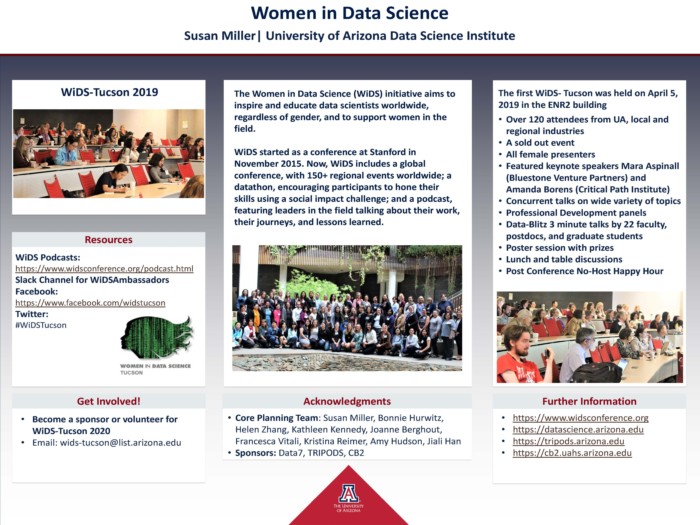

WiDS Tucson 2019
8:30-9:00 Check-in/Coffee/Tea
Provided by UA Data Science Institute
9:00-9:15 Introduction:
Remarks from Ambassador/co-Ambassadors
Stanford WiDS Introductory video viewing
9:15-9:40 Morning Keynote
Mara Aspinall, MBA, Castle Biosciences | former President & CEO Ventana Medical Systems: “Increasing impact and Influence - Women in Science”
9:45-10:00 Concurrent Talks:
Kathleen Kennedy, Associate Professor of Practice, Retailing and Consumer Sciences: “Disruption in Retail: How AI/Machine Learning and Big Data are transforming how and what we buy”
Michelle Strout, PhD, Professor, Computer Science: “High Performance Computing and Data”
Janet Roveda, PhD, Professor, Electrical and Computer Engineering, Biomedical Engineering, BIO5 Institute: “Refine Hardware Design Through Data Science”
10:00-10:15 Concurrent Talks:
Kathleen Prudic, PhD, Assistant Professor, School of Natural Resources & the Environment: “Data Science in Butterfly Conservation Takes Flight”
Helen Zhang, PhD, Professor, Mathematics, Statistics-GIDP, Applied Mathematics: “Theoretical Foundations of Data Sciences & TRIPODS”
Gondy Leroy, PhD, Professor, Management Information Systems; Director - Tomorrow’s Leaders Equipped for Diversity: “Data sets without ground truth: Creating data from behavioral descriptions in text”
10:15-10:30 Group Photo and Break
10:30-10:55 Professional Development Panel
Moderator: Kathleen Kennedy, Retailing and Consumer Sciences
Anna Josephson, PhD, UA Assistant Professor, Agricultural-Resource Economics
Na Zuo, PhD, Assistant Professor of Practice, Agric & Resource Econ-Ins
Jin Zhou, Assistant Professor, Public Health, Genetics – GIDP, Statistics-GIDP
Amy Hudson, UA PhD student in Natural Resources & the Environment, Data Science Ambassador
11:00-11:55 Morning DataBlitz: 3 minute talks
11:55-12:55 Lunch and Breakout Tables
Provided by UA Data Science Institute, UA TRIPODS, and UA Center for Biomedical Informatics & Biostatistics
Joanne Berghout: Big Data and Data Science in genomics
Marnee Dearman: Research Bazaar
Emmi Bevensee: Hate and Disinformation on Social Media
Bonnie LaFleur: Experimental Designs for Describing Assay Performance
Susan Miller: Increasing your Confidence
TBA: Building a Women in Data Science Community
1:00-1:30 Afternoon DataBlitz: 3 minute talks
1:30-1:55 Afternoon Keynote
Amanda Borens, MS, Data Platform Architect | Development Manager at Critical Path Institute: “Data Science for Good”
2:00-2:15 Concurrent Talks:
Bonnie Hurwitz, PhD, Assistant Professor, Agricultural-Biosystems Engineering, Genetics - GIDP, Statistics-GIDP, BIO5 Institute; Clinical Instructor, Pharmacy Practice-Science: “From Louis Pasteur to CSI”
Bonnie LaFleur, PhD, Research Professor, BIO5 Institute; Associate Professor, Public Health: “Novel Approaches in Displaying Functional Classes of miRNA Using Compositional Data”
Erin Leahey, PhD, Professor & Director, School of Sociology: “Universities’ Commitment to Interdisciplinary Research: To What End?”
2:15-2:30 Concurrent Talks:
Kristina Riemer, PhD, Scientific Programmer, Simulation Analysis for UA Agricultural Experiment Station: “From single-use code to user-friendly scientific software”
Aletheia Ida, PhD, Assistant Professor, School of Architecture, Social /Cultural /Critical Theory - GIDP: “Data Integrated Design Processes for Emerging Environmental Building Technologies”
Ramona Walls, PhD, Assistant Research Professor, BIO5 Institute; Senior Scientific Analyst at CyVerse: “Biology, ontology, and cyberinfrastructure (plus a little art and fashion): Making a career as a restless woman”
2:30-3:00 Inspirations for Women in Data Science Panel
Moderator: Tina Lee, CyVerse
Hong Cui, PhD, Associate Professor, School of Information
Kristina Riemer, PhD, Scientific Programmer, Simulation Analysis for UA Agricultural Experiment Station
Susan Miller, MS, Deputy Director for Research Cyberinfrastructure, UA Data Science Institute
Bonnie LaFleur, PhD, Research Professor, BIO5 Institute; Associate Professor, Public Health
3:00-4:00 Poster & Networking Session with Best Poster Awards:
Amy Hudson: Natural resources, dendrochronology, climatology/climate science, phenology
Emmi Bevensee: Disinformation and Political Ideology
Jiali Han: Convergent Mechanisms Perturbed By Scattered SNPs Susceptible to Alzheimer’s Disease
Bonnie LaFleur: Compositional Data in Genomics
Ahyoung Amy Kim: Cancer prevention & control meet statistical machine learning: karyometric studies
Amy Wong: PKCζ and JNK signaling regulate radiation-induced compensatory proliferation in parotid salivary glands
Others TBA
4:00-5:00 Happy Hour
Dragoon Brewing Company, 1859 W. Grant Rd
Conference Summary
